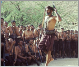


<style>
    .bordered {
        border: 1px solid black
    }

    .card {
        height: 100%;
        overflow: auto;
        background-color: #F0F2F2;
    }


        .card img {
            height: 150px
        }

    .bottom {
        vertical-align: bottom
    }
</style>
<!--Letters start-->
<section id="letters">
    <div class="row">

        <div class="container">

            <div class="row">
                <div class="col-md-4">
                    <div class="col-md-12 alert alert-warning  card bordered" role="alert" dir="rtl" style="text-align:right;">
                        <div class="col-md-12">
                            <h2 style="padding:2px;color:#FF530A;"> اختلف الباحثون في عدد حروف الهجاء الجبالية ومن أهم آرائهم: </h2>
                        </div>
                        <div class="col-md-12">
                            <ul class="list-group" style="color: #000;">
                                <li class="list-group-item">
                                    أن الجبالية تحتوي 28 حرفا .
                                </li>
                                <li class="list-group-item">
                                    ويرى آخرون أنها تتكون من 29 حرفا.
                                </li>
                                <li class="list-group-item">
                                    وفريق ثالث يرى أن عدد حروفها 30 حرفا .
                                </li>
                                <li class="list-group-item">
                                    ورأي رابع يرى أنها تشمل 33 حرفا .
                                </li>
                                <li class="list-group-item"></li>
                            </ul>
                        </div>
                       
                        
                    </div>
                </div>
                <div class="col-md-8">
                    <div class='col-md-12 card bordered' >
                        <div class="col-md-12 text-center">
                            <h1 class=" heading wow fadeInUp" data-wow-duration="300ms" data-wow-delay="300ms">
                                <span>حروف الجبالية</span> 
                            </h1>
                        </div>
                        <div class="col-md-4 float-left">
                            
                        </div>
                        <div class="col-md-8" dir="rtl" style="text-align:right;">
                            اختلف الباحثون في عدد حروف الهجاء الجبالية ومن أهم آرائهم: أن الجبالية تحتوي 28 حرفا . ويرى آخرون أنها تتكون من 29 حرفا.  وفريق ثالث يرى أن عدد حروفها 30 حرفا . ورأي رابع يرى أنها تشمل 33 حرفا .ومرد هذا الخلاف يعود إلى نظرة كلا منهم إلى تصنيف الأصوات المنطوقة، فالبعض يرى كل صوت منطوق من هذه الأصوات حرف قائم بذاته، بينما يرى آخرون أن بعض الحروف تنطق بطريقتين مختلفتين تبع لموقعها في الكلمة، أو لاستخدامها في حالة المفرد أو الجمع. كما يرى آخرون أن الجبالية لا زالت تحتفظ بأنماط قديمة في نطق بعض الحروف مثل : الشين المدموجة، والزاي المفخمة الثقيلة، واللام المفخمة الثقيلة، والميم والنون الأنفية المدغمة. كما أنها تحتفظ ببعض الحروف القديمة مثل : القاف القديمة، والصاد الاحتكاكية، والضاد الجانبية . وهذا ما حاولنا مناقشته في موضوع الحروف بعد الجدول التالي.

                            <div class="row bottom">
                                <!--<div class="col-md-6 left">
                                    <h4>$1,999.99</h4>
                                </div>-->
                                <div class="col-md-6 right" style="margin:22px">
                                    <button class="btn btn-success">المزيد</button>
                                </div>
                            </div>
                        </div>
                    </div>
                </div>
            </div>
        </div>


        
    </div>
</section>
<!-- Letters end-->